Ecossistemas de Inovação: Teoria, Orquestração e a Prática no PIT SJC
Artigos seminais e recentes da vanguarda da literatura internacional:
- ▸ Shen et al. (2025/2026): Mapeamento cienciométrico e fronteiras
- ▸ Machado et al. (2025): Competências de orquestração
- ▸ Furr & Shipilov (MIT): Ecossistemas adaptativos
- ▸ Majava & Rinkinen: Benchmarking de San Diego
Conexão umbilical com o Parque Tecnológico de São José dos Campos:
- ▸ Primeiro Parque Tecnológico do Estado de SP (2006)
- ▸ Mais de 300 empresas e 4 APLs consolidados
- ▸ Nexus Hub: aceleradora e incubadora de deep techs
- ▸ Campus UNIFESP e sinergia com o PPG-PIT
Interatividade em tempo real pelo smartphone da turma:
- ▸ 6 Fases no mapa do PIT acionadas após cada bloco
- ▸ 18 perguntas (1 certa e 2 erradas) com cronômetro
- ▸ Pontuação regressiva estilo Kahoot por milissegundo
- ▸ Pódio com confetes e análise cienciométrica dos erros
Estrutura e Divisão dos Blocos
James Moore (1993), coevolução e a cienciometria de Shen et al. (2025/2026).
Heterogeneidade de atores, hélices 3ª, 4ª e 5ª, e a simbiose acadêmica-industrial.
Framework de Machado et al. (2025): Apropriabilidade, Mobilização e Estabilidade.
Furr & Shipilov (MIT), o case Nexus Hub e estratégias adaptativas de liderança.
Benchmarking internacional Majava & Rinkinen e a entrevista com o PIT SJC.
O Lado Sombrio (Shen et al.), lock-in predatório e debate estratégico com a banca.
São José dos Campos & PIT: Por que a Indústria Precisa da Academia?
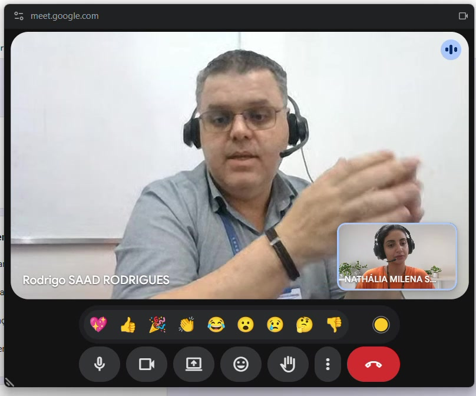
Multinacional fabricante de tecidos termoacústicos avançados. Para além dos livros, a colega Nathália Neves foi a campo investigar a realidade prática da indústria no ecossistema de SJC.
- ▸ Densidade Única: 300+ empresas, 4 APLs (Aeroespacial, Defesa, TIC e Saúde) e DCTA/ITA/INPE.
- ▸ Presença da UNIFESP: O Campus Parque Tecnológico integrado fisicamente ao ecossistema.
A Origem do Conceito: Tansley (1935) & Moore (1993)
- ▸ Arthur Tansley (1935): Cunhou o termo "ecossistema" na Biologia/Botânica para descrever comunidades de seres vivos interagindo com o meio físico.
- ▸ James F. Moore (HBR, 1993): Importou a metáfora para a Estratégia Empresarial: as empresas não competem isoladas, mas em ecossistemas interconectados.
- ▸ Co-evolução Mútua: Organizações aprendem, adaptam-se e coevoluem capacidades em conjunto em torno de uma proposta de valor central.
- ▸ Cooperação na Base Científica: Universidades (UNIFESP, ITA) e empresas cooperam em pesquisa pré-competitiva.
- ▸ Competição no Mercado Final: Empresas competem vigorosamente por contratos globais de fornecimento.
- ▸ Destino Compartilhado: O fracasso da cadeia fornecedora compromete o ecossistema inteiro.
Evolução Bibliométrica: Shen et al. (2025/2026)
Fase exploratória, metáforas biológicas seminais e definição de limites conceituais preliminares.
Explosão de estudos sobre orquestradores de Big Techs (Apple, Google), APIs e externalidades de rede.
Foco na transição digital, sustentabilidade Net-Zero, orquestração regional e mitigação do lado sombrio.
Como Diferenciar: Cluster, Sistema e Ecossistema
Concentração geográfica de firmas do mesmo setor que buscam ganho de escala produtiva e redução de custos logísticos.
- ▸ Foco Central: Eficiência de custos e aglomeração de cadeia tradicional.
- ▸ Limitação: Não exige interdependência nem co-criação de novidades tecnológicas.
Arcabouço institucional formal do Estado: leis de incentivo, ministérios, agências reguladoras e fomento público.
- ▸ Foco Central: Políticas públicas de C&T, subsídios e infraestrutura básica regional.
- ▸ Limitação: Dinâmica predominantemente macro, institucional e regulatória.
Rede de parceiros, fornecedores e canais de distribuição voltada à monetização e entrega de valor existente.
- ▸ Foco Central: Captura de valor comercial no curto prazo e market share.
- ▸ Limitação: Não prioriza a pesquisa científica de ponta nem coevolução em incerteza.
Comunidade interdependente de atores heterogêneos focada na co-criação de novo conhecimento.
- ▸ Foco Central: Geração conjunta de soluções inéditas que nenhum ator geraria isolado.
- ▸ Diferencial: Orquestração relacional, simbiose e coevolução contínua.
Desafio da Fase 1: Bloco Acadêmico UNIFESP
Perguntas sobre a metáfora biológica, coevolução, cienciometria de Shen et al. e as fronteiras conceituais de ecossistemas.
2. Ande até o desafio da Fase 1
3. Responda o mais rápido possível!
| Pos | Jogador | Turma | Pontos | Acertos |
|---|---|---|---|---|
| Aguardando respostas da turma para a Fase 1... | ||||
Anatomia do Ecossistema: Heterogeneidade & Simbiose de Atores
UNIFESP • ITA • INPE • CEMADEN
Embraer • Avibras • Ericsson • Startups
FAPESP • FINEP • Anjos • Fundos VC
PIT SJC • Nexus Hub • Living Labs
Da Tríplice à Quíntupla Hélice: Sociedade & Sustentabilidade
Pesquisa pura e aplicada, patentes e formação de mentes científicas (UNIFESP, ITA, INPE).
Conversão de tecnologia em produtos comerciais, tração fabril e escala global.
Marco legal de CTI, estabilidade regulatória, compras públicas e fomento (FAPESP/FINEP).
Cidadãos, usuários e co-criação. Validação de demandas nos Living Labs e cidades inteligentes.
Transição energética, neutralidade de carbono, economia circular e impacto regenerativo.
Estudo Empírico: A Quádrupla Hélice na Prática & Conexão Academia-Mercado
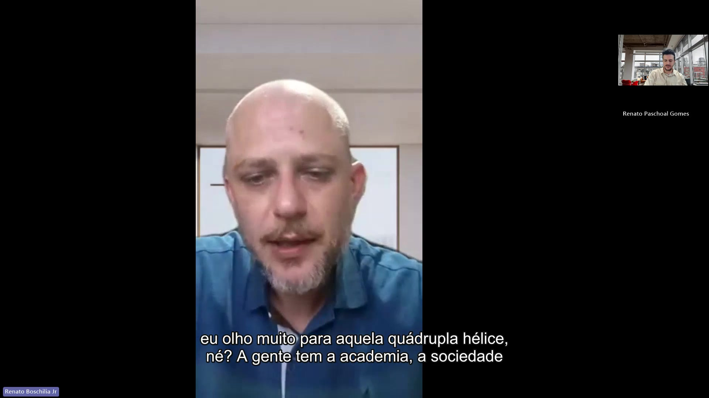
O PIT SJC atua como o orquestrador neutro (a 4ª hélice de governança cidadã e sociedade civil organizada) que faz convergir universidade pública (UNIFESP, ITA), empresas privadas e fomento municipal.
O pesquisador exige rigor metodológico e validação de viabilidade; a empresa privada exige velocidade e retorno. O Parque cria o ambiente de tradução para que ambas as culturas se complementem.
Inovação profunda (Deep Tech) carrega incerteza intrínseca. O contato 'olho no olho' no ecossistema e ferramentas integradoras (como a rede Colmeia) constroem a resiliência indispensável para a cooperação duradoura.
Interdependência & Riscos: Cadeia Linear vs. Rede Viva
- ▸ Comando & Subordinação: Relações hierárquicas e contratuais rígidas.
- ▸ Transação Bilateral: Compra e venda com preços e especificações fixas.
- ▸ Rigidez Operacional: Baixa adaptabilidade quando ocorrem disrupções externas.
Desafio da Fase 2: Praça Central das Hélices
Perguntas sobre a anatomia do ecossistema, o modelo das 5 hélices e os riscos de co-inovação de Ron Adner.
2. Caminhe até a estação ativa no campus
3. Responda antes do tempo esgotar!
| Pos | Jogador | Turma | Pontos | Acertos |
|---|---|---|---|---|
| Aguardando respostas da turma para a Fase 2... | ||||
Como coordenar atores independentes, e quais mecanismos e competências permitem a orquestração do ecossistema?
Coordenar sem autoridade hierárquica
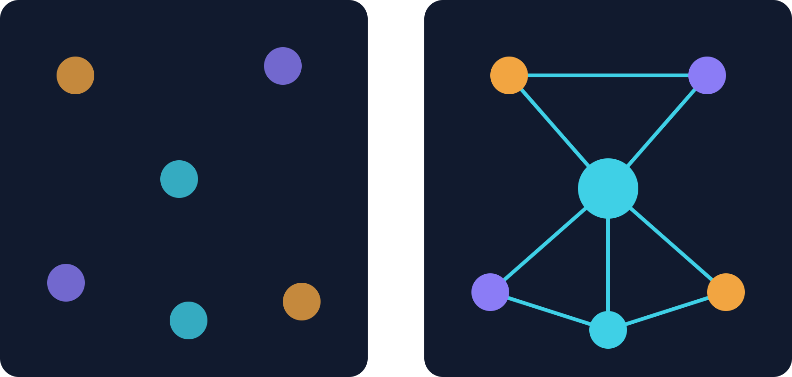
Das 3 às 8 dimensões de orquestração
Dar direção, reunir e manter os atores
Leiloeiro · propõe agenda para uma visão conjunta
Leiloeiro · cria e promove a visão conjunta
Líder · motiva a colaboração com visão de longo prazo
Fazer conhecimento, ação e mensagem circularem
Representante · compartilha e filtra para fora
Juiz · monitora e ajusta padrões de desempenho
Competência de orquestração: CHA em ação
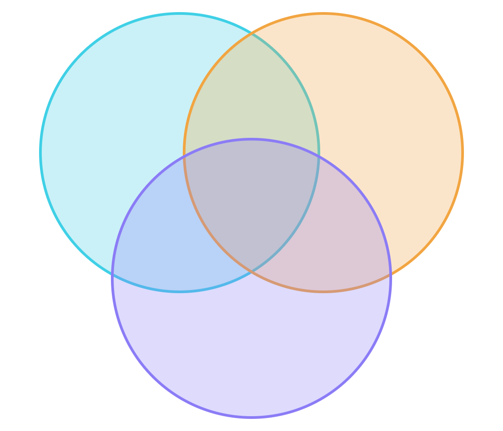

Como coordenar atores independentes?
Desafio da Fase 3: Centro de Governança do PIT
Perguntas sobre mobilização de atores, regimes de apropriabilidade, governança via Organização Social e mitigação de entropia.
2. Ande até o desafio da Fase 2
3. Responda o mais rápido possível!
| Pos | Jogador | Turma | Pontos | Acertos |
|---|---|---|---|---|
| Aguardando respostas da turma para a Fase 3... | ||||
Como Construir Ecossistemas: Furr & Shipilov (MIT)
- ▸ Querer ditar todas as regras e deter 100% da governança desde o dia zero.
- ▸ Afasta parceiros estratégicos que se sentem meros subordinados em vez de co-criadores.
- ▸ Falha catastrófica em prever mudanças tecnológicas dinâmicas.
- ▸ Alinhamento de Proposta de Valor Mínima: Começar com problemas práticos compartilhados.
- ▸ Estrutura Flexível de Entrada e Saída: Baixa fricção para atração de novas startups.
- ▸ Orquestração Baseada em Incentivos: A rede cresce porque todos ganham valor real.
O Nexus como Catalisador: Acelerando Deep Techs e Filtrando Oportunistas
Prototipagem rápida, eletrônica, ensaios mecânicos e matchmaking com grandes contas corporativas (open innovation) no Parque Tecnológico.
O orquestrador seleciona startups com maturidade tecnológica real (TRL avançado), evitando aventureiros que apenas captam subvenções sem entregar produto.
A presença de profissionais com PhD na indústria permite auditar a ciência da startup e dialogar com os professores da UNIFESP.
Liderança sem Autoridade Hierárquica: O Desafio do Orquestrador
- ▸ Tradicional: Comando e controle, hierarquia vertical, contratos rígidos de subordinação.
- ▸ Orquestração: Influência lateral, negociação de incentivos, transparência informacional radical.
- ▸ Como o Nexus rearticulou fábricas e laboratórios para produzir ventiladores e EPIs emergenciais.
- ▸ Demonstração real de resiliência e adaptação orgânica da rede do PIT SJC.
Estudo Empírico: Tipos de Contratos, Governança & NDA no "Dia Zero"
A blindagem jurídica de segredos industriais e patentes não deve travar o diálogo, mas ser assinada no primeiro instante para permitir a troca transparente de desafios técnicos.
Em ecossistemas de inovação aberta, contratos excessivamente burocráticos matam a agilidade; a melhor prática é estabelecer marcos de entregas claros com divisão prévia de titularidade intelectual.
O instrumento contratual não substitui o alinhamento pessoal, mas mitiga o receio acadêmico e corporativo de apropriação indébita, estabilizando a rede (Machado et al., 2025).
Desafio da Fase 4: Nexus Hub de Startups
Perguntas sobre ecossistemas adaptativos, a armadilha do controle imperial, suporte a deep techs e liderança lateral.
2. Ande até o desafio da Fase 3
3. Responda o mais rápido possível!
| Pos | Jogador | Turma | Pontos | Acertos |
|---|---|---|---|---|
| Aguardando respostas da turma para a Fase 4... | ||||
O Caso de San Diego
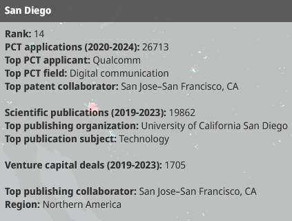
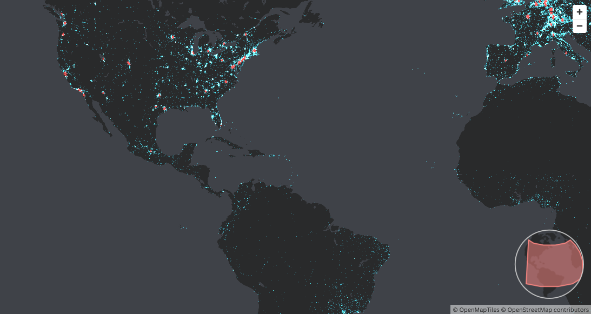
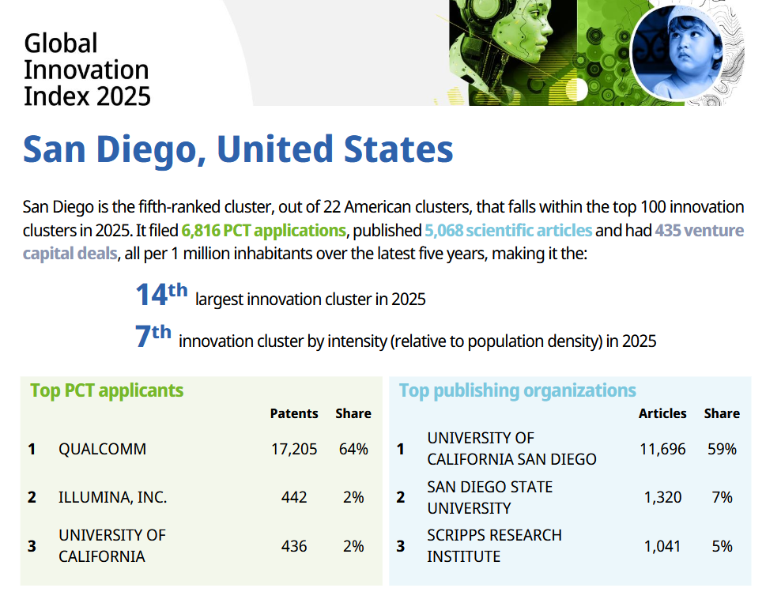
O que é um ecossistema de inovação?
Fundação da UCSD nos anos 60 focada em ciências e biologia, atraindo cientistas de elite e investidores de risco.
Investimento prévio em hospitais e clínicas; isolamento geográfico que evitou indústrias pesadas e poluição.
Zoneamento urbano na década de 1970 garantindo contiguidade física entre universidade, institutos e startups.
Redução do complexo militar nos anos 80 aumentou o desemprego, forçando reação e reinvenção regional acelerada.
Criação da CONNECT (1985) na UCSD para acelerar negócios, mentoria e elevar a confiança mútua da rede.
Curtas distâncias físicas facilitando encontros de corredor, colaboração informal e trocas de conhecimento tácito.
ECOSSISTEMAS DE INOVAÇÃO • O Caso de San Diego
CONNECT (1985)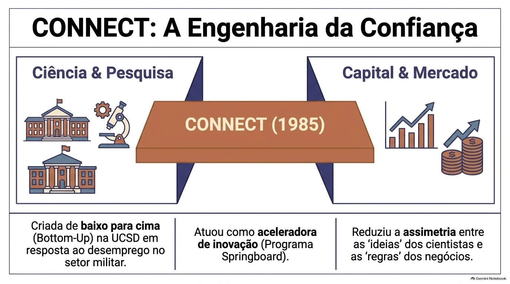
ECOSSISTEMAS DE INOVAÇÃO • O Caso de San Diego
Matriz PEST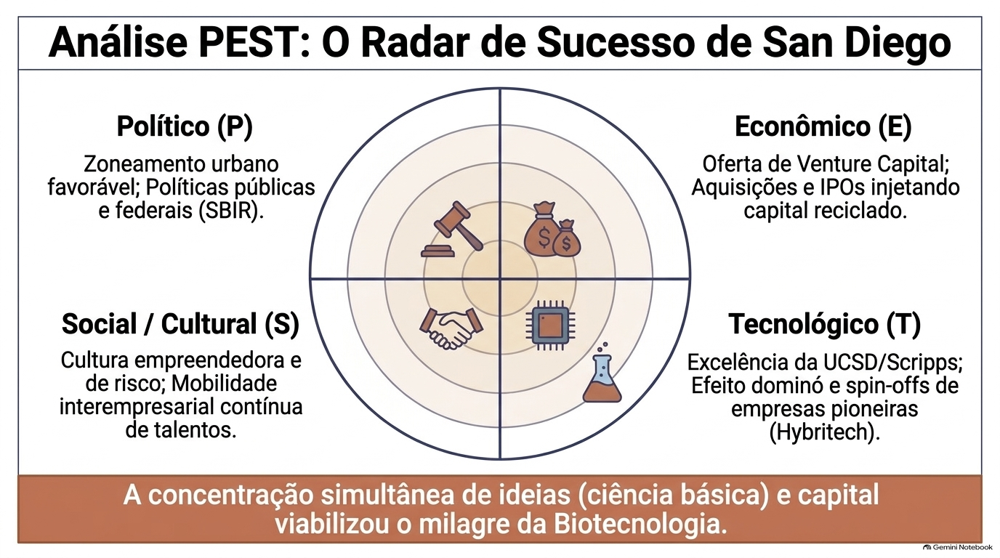
ECOSSISTEMAS DE INOVAÇÃO • O Caso de São José dos Campos
Gênese & Vocação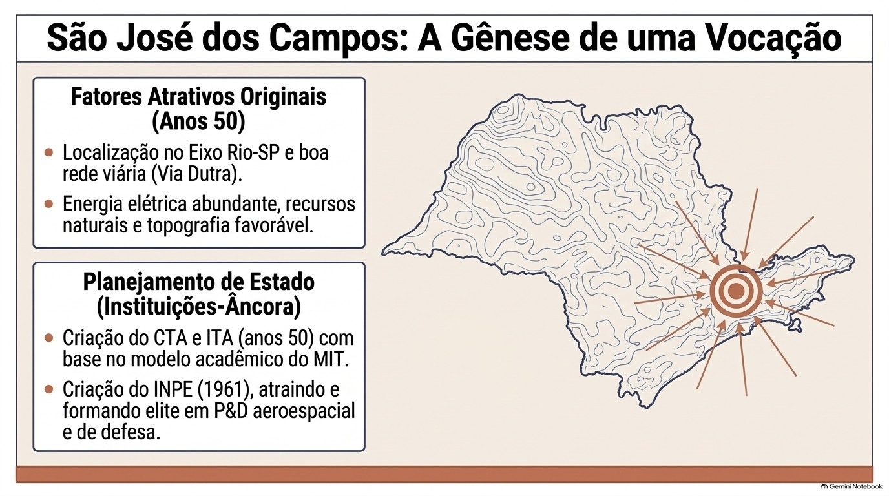
ECOSSISTEMAS DE INOVAÇÃO • O Caso de São José dos Campos
Polo 1 ➔ Polo 3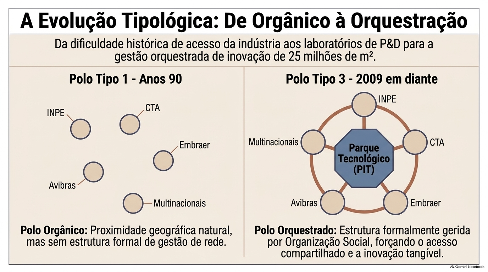
O PIT SJC
pitsjc.org.br/institucional/relatorio-de-atividades/
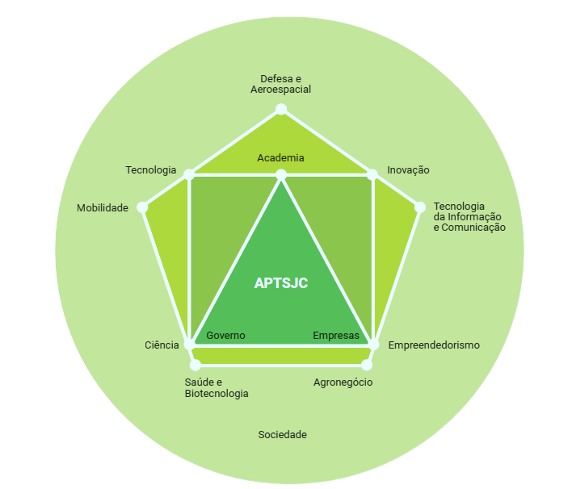
Estudo Empírico: A Hélice Pública & Gestão Regional (Selo TCE-SP)
Tribunal de Contas do Estado de SP (i-Gov TI)
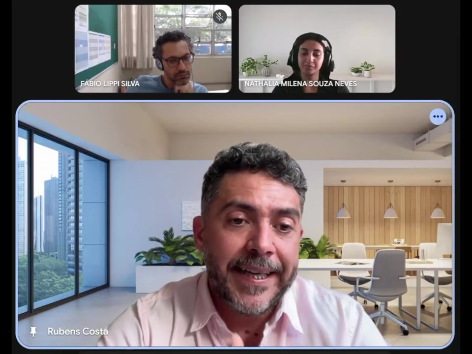
Menos de 4,5% dos municípios de São Paulo atingem este patamar. Em toda a Região Metropolitana do Vale do Paraíba e Serra, apenas São José dos Campos e Caraguatatuba conquistaram o selo de governança digital por dados.
A tecnologia deixou de ser suporte técnico reativo para se tornar alavanca estratégica: modernização das áreas essenciais como Saúde, Educação (25.000 alunos) e Sepedi (Pessoa com Deficiência e Idoso).
O PIT SJC atua como o polo indutor, mas a eficácia da Hélice Governamental depende da maturidade digital de toda a RMVale, criando um território integrado e atrativo para investimentos e talentos.
Estudo Empírico: O Modelo de Gestão do PIT SJC (OS & Contrato de Metas)
Parque de Inovação Tecnológica de SJC
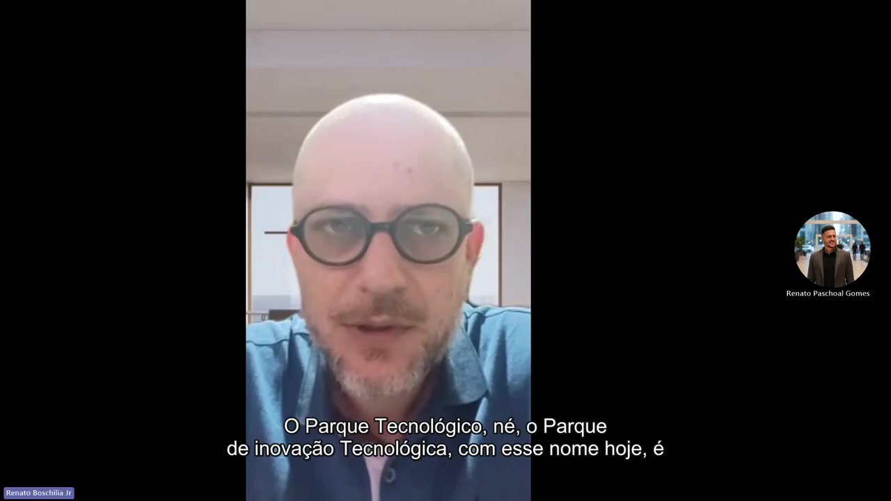
A Associação APTSJC é uma entidade privada sem fins lucrativos qualificada pelo poder público. Essa estrutura garante agilidade em compras, contratação ágil por CLT e dinamismo operacional inatingível pela administração direta.
Anualmente o PIT presta contas rigorosas à Prefeitura Municipal: volume de conexões geradas, eventos de capacitação, projetos contratados e captação de recursos a fundo perdido para empresas da região.
A gestão por indicadores permite acompanhar a evolução histórica do ecossistema: o Parque não mede apenas esforços internos, mas o valor real e desenvolvimento que a sociedade recebe do investimento público.
O PIT SJC
pitsjc.org.br/institucional/relatorio-de-atividades/
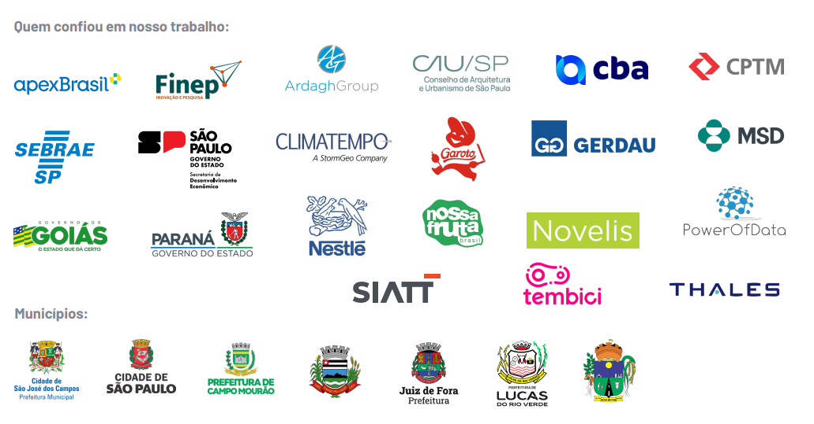
Comparativo
San Diego (EUA) vs. São José dos Campos (Brasil)| Dimensão | San Diego (EUA) | São José dos Campos |
|---|---|---|
| Matriz Científica e Origem | Pesquisa em saúde (Scripps, Salk), UCSD e demandas da Marinha/Aeronáutica civil. | Planejamento estatal/militar em defesa e aeroespacial (CTA, ITA, INPE). |
| Evolução da Governança | Modelo Bottom-Up: Liderança privada e universidade criaram a ONG CONNECT em 1985. | De Orgânico (Tipo 1) a Orquestrado (Tipo 3): De polo sem gestão formal (anos 90) ao PIT em 2009 (gestão por Organização Social). |
| Papel do Território | Zoneamento urbano em 1970 garantiu proximidade física entre universidade, institutos e startups. | Aglomeração territorial no PIT gerando sinergia e transbordamento de conhecimento tácito (spill-overs). |
| Atores-Âncora e Genealogia | Startups pioneiras em ciências (Hybritech em biotec e Linkabit/Qualcomm em sem fio). | Embraer, Avibras e vasta rede de fornecedores e spin-offs de pesquisadores do CTA/INPE. |
| Modelo de Financiamento | Investimento federal em pesquisa (NIH, SBIR/STTR), Capital de Risco (Venture Capital) e IPOs. | Histórico de encomendas estatais de defesa e transição atual para modelo híbrido (investimentos públicos e privados no PIT). |
| Diversificação Setorial | Liderança mundial em Biotecnologia, Ciências da Vida e Telecomunicações Sem Fio. | Matriz aeroespacial/defesa expandida para TIC Vale, Agropolo, Saúde, Mobilidade e Smart Cities. |
Estudo Empírico: O Case Start-Up Chile & Santiago como Hub Global
A Tríplice Hélice Orquestrada por Metas de Mercado
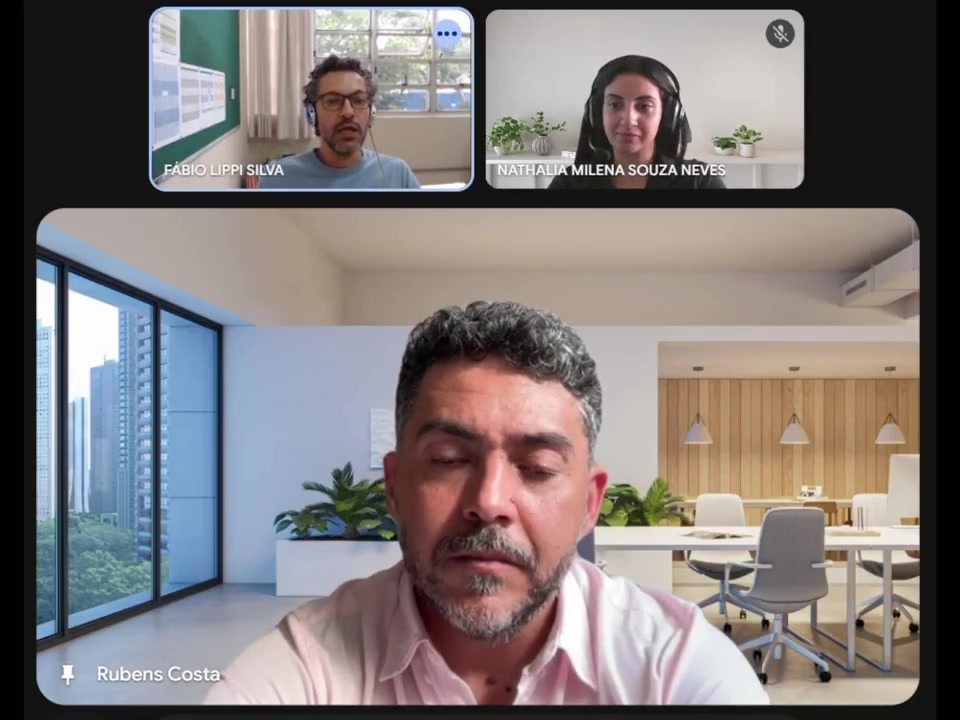
O governo (CORFO) forneceu o fomento e infraestrutura; a PUC Chile converteu empreendedorismo em metodologia científica replicável e dados de pesquisa; e executivos de Venture Capital lideraram o programa com metas estritas de retorno.
Diferente de doações de terrenos e isenções para indústrias pesadas tradicionais (que geram passivos e risco de descontinuidade), o Chile apostou no software e na tecnologia digital, escalando soluções globais a partir de Santiago.
Não basta discursar sobre inovação: o modelo gerou o maior salto de crescimento no PIB das Américas porque uniu as três pontas para resolver dores reais, economizar recursos públicos e atrair investimentos globais.
Desafio da Fase 5: Pavilhão Aeroespacial & San Diego
Perguntas sobre a transformação de San Diego, o orquestrador CONNECT, o programa Springboard e o aprendizado para o Brasil.
2. Caminhe até a estação ativa no campus
3. Responda antes do tempo esgotar!
| Pos | Jogador | Turma | Pontos | Acertos |
|---|---|---|---|---|
| Aguardando respostas da turma para a Fase 5... | ||||
A Integração UNIFESP & PIT: Co-criação na Prática
Infraestrutura multiusuária do Campus Parque Tecnológico SJC com acesso franqueado a pesquisadores e empresas para testes avançados.
Dissertações e teses desenvolvidas sobre desafios concretos dos APLs de São José dos Campos, formando especialistas sob medida.
Incentivo ativo à geração de spin-offs universitárias ancoradas no Nexus Hub com fomento de risco PIPE-FAPESP e FINEP.
Estudo de Caso Prático: Projeto FEHIDRO, IA nas Cidades & ESG
PIT SJC • FEHIDRO • Sabesp • Prefeituras
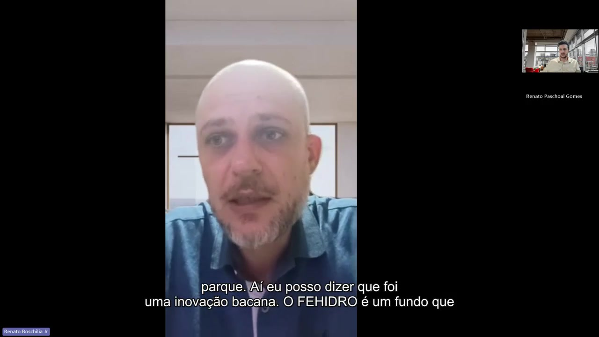
Startups residentes no PIT articuladas com prefeituras municipais e a Sabesp: inovação aberta resolvendo desafios reais da infraestrutura pública regional com a participação ativa da nossa equipe.
Sensores digitais de pressão e análise preditiva de IA mapearam em tempo real a malha de distribuição hídrica, estancando vazamentos históricos que chegavam a 60% de perda de água tratada.
A preservação das bacias hidrográficas transforma a economia ambiental em receita financeira real para os municípios, que reinvestem os valores economizados em saúde e educação básica.
4 Eixos de Governança Analisados na Prática do PIT SJC
Definição explícita de Propriedade Intelectual antes do início dos testes no laboratório, garantindo segurança jurídica.
- ▸ Segurança jurídica para capital corporativo.
- ▸ Preservação da autoria dos pesquisadores.
A convivência diária no parque resolve mais atritos do que disputas judiciais formais.
- ▸ O Nexus Hub estimula networking informal.
- ▸ Redução de custos transacionais por reputação.
Uso estratégico da Lei 13.243/16 para desbloquear parcerias universidade-empresa.
- ▸ Compartilhamento de infraestrutura federal.
- ▸ Bolsas de estímulo à inovação aberta.
O ecossistema demanda mestres e doutores com sólida visão acadêmica e mentalidade empreendedora.
- ▸ O PPG-PIT capacita talentos bilíngues.
- ▸ Tradução de demandas fabris em pesquisa.
Pés no Chão: Evitando o "Teatro da Inovação" & 5 Gargalos do Ecossistema
Desalinhamento crônico entre as hélices: o governo opera com lentidão burocrática, a universidade foca em publicações e o mercado exige retorno imediato. Sem um orquestrador neutro com autoridade relacional, as pontes não se sustentam.
O "Teatro da Inovação" nacional supervaloriza títulos e certificados acadêmicos em detrimento da educação prática e da capacidade de resolver dores industriais reais com código, engenharia e patentes comerciais.
No Brasil, a segurança regulatória e a conformidade fiscal são tratadas como apêndice ao final do projeto. Se a blindagem jurídica não fizer parte do design no Dia +1 da iniciativa pública, o projeto trava nos órgãos de controle.
Formamos pesquisadores de ponta em universidades públicas, mas o ecossistema falha em reter os cérebros ou em converter seu conhecimento em produtos globais de alto valor agregado exportáveis.
Prefeituras gastam milhões anuais em softwares proprietários ineficientes enquanto a universidade local desenvolve código aberto de alta qualidade. Sem orquestração e mecanismos de encomenda tecnológica (Marco Legal das Startups), as duas pontas continuam isoladas.
As Armadilhas da Rede: Lock-in, Predação e a Barreira Cultural da Gestão
Startups e laboratórios acadêmicos que investem recursos em tecnologia hiper-customizada para uma empresa âncora e ficam reféns de preços ditados.
Eventos de networking com pizza e discursos de sustentabilidade que geram alto engajamento em redes sociais, mas zero patentes e zero escala industrial.
Diretorias de empresas antigas e conservadoras com aversão a risco, condicionadas a importar produtos prontos em vez de co-desenvolver com o ecossistema.
Desafio da Fase 6: Living Lab Net-Zero & Fronteiras
Perguntas finais sobre a delimitação de fronteiras, causalidade de impacto, o lado sombrio dos ecossistemas e métricas reais de sucesso.
2. Ande até o desafio da Fase 6
3. Responda o mais rápido possível!
| Pos | Jogador | Turma | Pontos | Acertos |
|---|---|---|---|---|
| Aguardando respostas da turma para a Fase 6... | ||||
Consolidação das 18 Questões: O Pódio Provisório
Classificação Geral & Diagnóstico Cienciométrico dos Erros
| # | Nome | Turma | Pontos | Acertos |
|---|---|---|---|---|
| Aguardando finalização das rodadas... | ||||
O Cockpit Admin computa a dispersão percentual das respostas de cada questão para identificar onde residem as principais dúvidas conceituais da turma.
As 5 Leis Fundamentais dos Ecossistemas de Inovação
O valor não está na soma contábil dos atores, mas na densidade das conexões de confiança estabelecidas.
Redes sem mediação legítima sucumbem à desordem e aos conflitos de apropriação predatória.
A inovação disruptiva floresce no atrito criativo entre academia, empresas, governo e sociedade.
Quem co-inova precisa ter segurança de colher os frutos do seu investimento intelectual.
Não existe Silicon Valley, San Diego ou PIT SJC sem fortes investimentos públicos na base científica.
PPG-PIT UNIFESP
Provocações Estratégicas para o PPG-PIT e PIT SJC
Como reduzir as barreiras de contratação de PD&I entre o campus UNIFESP e as mais de 300 empresas do PIT?
Como simplificar a cessão e o licenciamento de patentes acadêmicas geradas por alunos sem burocracia excessiva?
O que o Parque Tecnológico pode articular para atrair fundos de investimento privado no estilo San Diego?